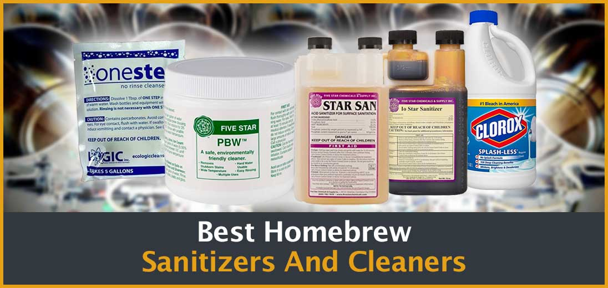
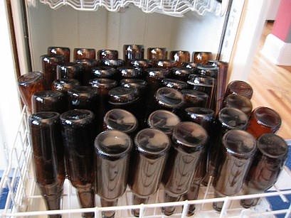
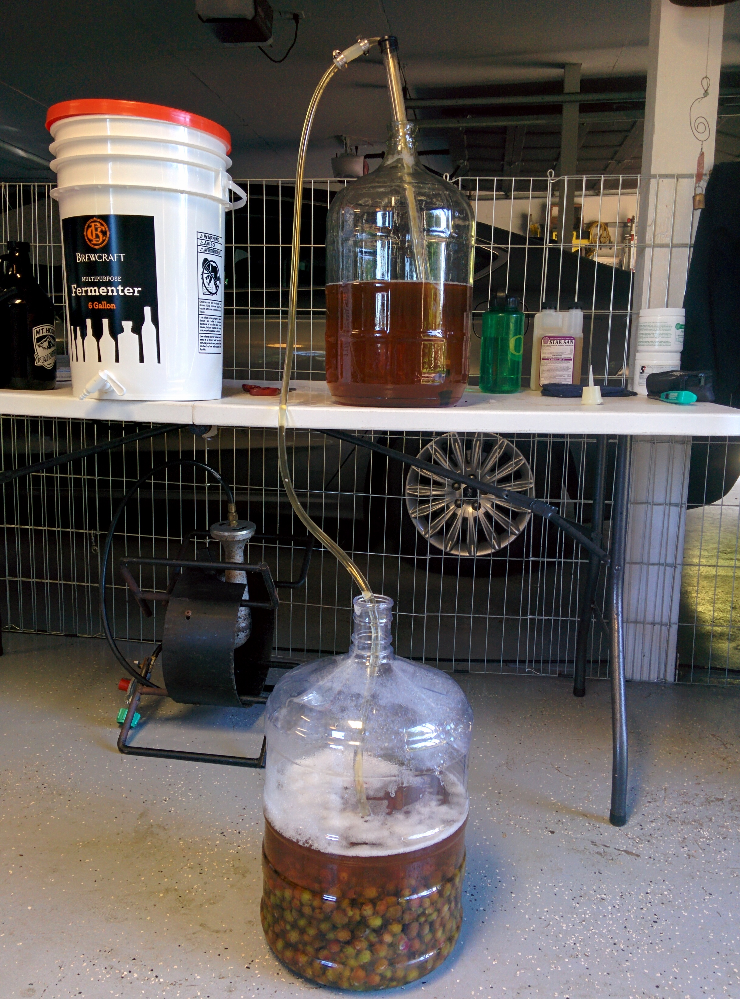

02. The Importance of Sanitizing
- Cleaning and sanitizing your homebrew gear is important because it is one of the easiest ways to ensure your beer’s quality between small batches. When you don’t clean and sanitize your homebrew gear, your beer might be exposed to microorganisms that can rapidly skunk your beer.
- Some common bugs that can burst your beer bubble include Lactobacillus. This creature can leave your beer tasting sour (but not in a good way) because of the lactic acid it produces after eating the yeast and sugar in your beer. Other creepy creatures like Pediococcus leave mysterious rope-like bits growing in your beer.
- Simply put, by not properly cleaning and sanitizing your homebrewing equipment, you’re setting yourself up for failure. If you clean but don’t sanitize, you open your beer up for bacteria to fester and infect your beer. If you sanitize but don’t clean, you might have leftover sediments and yeast in your new batch of beer that clouds its color and character.
- Cleaning and sanitizing your homebrew gear is important because it is one of the easiest ways to ensure your beer’s quality between small batches. When you don’t clean and sanitize your homebrew gear, your beer might be exposed to microorganisms that can rapidly skunk your beer.
- Some common bugs that can burst your beer bubble include Lactobacillus. This creature can leave your beer tasting sour (but not in a good way) because of the lactic acid it produces after eating the yeast and sugar in your beer. Other creepy creatures like Pediococcus leave mysterious rope-like bits growing in your beer.
- Simply put, by not properly cleaning and sanitizing your homebrewing equipment, you’re setting yourself up for failure. If you clean but don’t sanitize, you open your beer up for bacteria to fester and infect your beer. If you sanitize but don’t clean, you might have leftover sediments and yeast in your new batch of beer that clouds its color and character.


09. Transfer to Fermenter
- Pouring the wort through a stainless steel strainer can help with limiting the amount of trub that is passed over when moving the wort into the fermenter. If you are siphoning the cooled wort from the boil pot, then whirlpooling can help.
- Whirlpooling is a means of gathering most of the trub into the center of the pot to make it easier to draw off wort from the side of the pot. Rapidly stir the wort in a circular manner. Continue stirring until all the liquid is moving and a whirlpool forms.
- Stop stirring and let the whirlpool slow down and settle for 10 minutes or so. The whirlpooling action will form a pile in the center of the pot, leaving the edge relatively clear. The siphon won't clog as quickly now if it draws from the side of the pot.
- Pouring the wort through a stainless steel strainer can help with limiting the amount of trub that is passed over when moving the wort into the fermenter. If you are siphoning the cooled wort from the boil pot, then whirlpooling can help.
- Whirlpooling is a means of gathering most of the trub into the center of the pot to make it easier to draw off wort from the side of the pot. Rapidly stir the wort in a circular manner. Continue stirring until all the liquid is moving and a whirlpool forms.
- Stop stirring and let the whirlpool slow down and settle for 10 minutes or so. The whirlpooling action will form a pile in the center of the pot, leaving the edge relatively clear. The siphon won't clog as quickly now if it draws from the side of the pot.
